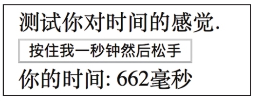

学习编程最直接的方式就是读代码，让我们先通过代码来看看RxJS是什么样的。
我们实现一个并不是特别复杂，但是也十分有趣的应用“时间感觉”，这个应用可以考察你对一秒钟时间的感觉准确度如何。这是一个网页应用，在浏览器中运行，界面中有一个按钮。作为用户，你按下按钮等待一秒钟后松开按钮，这个程序会测量松开和按下按钮的时间差，如果这个时间差越接近一秒钟，表示你对时间的感觉越好。
我们选择这样一个应用例子作为本书的开始，而不是写一个简单的Hello World，是因为只有复杂一点的应用才能体现RxJS的优势。
为了把RxJS和传统的编程方式对比，我们先用jQuery来实现这个应用。

图1-1 “时间感觉”应用界面
提示
对应代码在本书的GitHub代码库chapter-01/jquery目录中可以找到。
首先，我们需要创建一个HTML网页：
<!doctype html>
<html>
<body>
<div>
<div>测试你对时间的感觉.</div>
<button id="hold-me">按住我一秒钟然后松手</button>
<div> 你的时间: <span id="hold-time"></span>毫秒</div>
<div id="rank"></div>
</div>
<script src="https://unpkg.com/jquery@1.12.4"></script>
<script src="./timingSenseTest.js"></script>
</body>
</html>
这个HTML代码只是显示了按钮等网页元素，并引入了jQuery，至于测量时间的逻辑，则完全存在timeSenseTest.js文件中。
接下来，我们来看一下timeSenseTest.js文件的内容：
var startTime;
$('#hold-me').mousedown(function() {
startTime = new Date();
})
$('#hold-me').mouseup(function() {
if (startTime) {
const elapsedMilliseconds = (new Date() - startTime);
startTime = null;
$('#hold-time').text(elapsedMilliseconds);
$.ajax('https://timing-sense-score-board.herokuapp.com/score/' + elapsedMilliseconds).done((res) => {
$('#rank').text('你超过了' + res.rank + '% 的用户');
});
}
})
这段代码非常直观，即使你对jQuery并不是十分了解，也并不难看明白这段代码的工作逻辑。
当用户按住id为hold-me的按钮时，引发了mousedown事件，这时候我们给startTime变量赋值当前时间。
当用户放开按钮时候引发mouseup事件，这时候需要判断一下startTime是否被初始化，因为，用户有可能在按钮之外按下鼠标，这时startTime并不是按下按钮的时间，检查startTime是否被初始化就是防止这种情况下出现误判。
为了让用户下一次按住按钮是一个新的开始，在使用完startTime之后，代码把startTime重新设为null，这样才能保证每一次操作之后状态恢复原样。
最后，当我们获得用户按住按钮的时间之后，用户的成绩会显示在页面上，然后发送一个AJAX请求，把用户的成绩汇报给一个API，这个API会返回用户的成绩排名。
我不知道读者看完这段代码之后是怎样的感觉，反正我看到两个函数交叉访问一个变量startTime时，就感觉这段代码的“味道”不大好，因为不得不十分小心地处理对变量的访问，以防出错。
上面是通过传统的jQuery方法实现的，接下来，我们看看如果用RxJS来实现的话，代码会怎样。
提示
相关代码在本书配套GitHub代码库的chapter-01/rxjs目录下可以找到。
其中，HTML代码部分和上面的例子几乎一样，区别是引入的JavaScript库是Rx.min.js而不是jQuery：
<script src="https://unpkg.com/rxjs@5.4.2/bundles/Rx.min.js"></script>
在timingSenseTest.js文件中，JavaScript代码也有很大区别，内容如下：
const holdMeButton = document.querySelector('#hold-me');
const mouseDown$ = Rx.Observable.fromEvent(holdMeButton, 'mousedown');
const mouseUp$ = Rx.Observable.fromEvent(holdMeButton, 'mouseup');
const holdTime$ = mouseUp$.timestamp().withLatestFrom(mouseDown$.timestamp(), (mouseUpEvent, mouseDownEvent) => {
return mouseUpEvent.timestamp- mouseDownEvent.timestamp;
});
holdTime$.subscribe(ms => {
document.querySelector('#hold-time').innerText = ms;
});
holdTime$.flatMap(ms => Rx.Observable.ajax('https://timing-sense-score-board.herokuapp.com/score/' + ms))
.map(e => e.response)
.subscribe(res => {
document.querySelector('#rank').innerText = '你超过了' + res.rank + '% 的用户';
});
也许你此时完全不明白这段使用RxJS的代码如何解读，没有关系，解释RxJS正是此书的目的。
在这里，我们先要明白，RxJS世界中有一种特殊的对象，称为“流”（stream），在本书中，也会以“数据流”或者“Observable对象”称呼这种对象实例。作为对RxJS还一无所知的读者，目前可以把一个“数据流”对象理解为一条河流，数据就是这条河流中流淌的水。
提示
代表“流”的变量标示符，都是用$符号结尾，这是RxJS编程中普遍使用的风格，被称为“芬兰式命名法”（Finnish Notation）。
在上面的代码中，mouseDown$和mouseUp$都是数据流，分别代表按钮上的mousedown事件和mouseup事件集合，不光包含已经发生的事件，还包含没有发生的鼠标事件。对数据流一视同仁，这就是数据流的妙处。
“流”可以通过多种方法创造出来，mouseDown$和mouseUp$通过fromEvent函数从网页的DOM元素中获得，holdTime$这个流则是通过mouseDown$和mouseUp$计算衍生而来。
流对象中“流淌”的是数据，而通过subscribe函数可以添加函数对数据进行操作，上面的代码中，对holdTime$对象有两个subscribe调用，一个用来更新DOM，另一个用来调用API请求。
也许你现在还是一头雾水，所以我们不要纠结代码细节，但阅读上面的RxJS代码，可以观察到一个有趣的现象：在jQuery实现中，我们有被交叉访问的变量（startTime），两个不同函数的逻辑相互关联，稍有不慎就会引发bug；但是在RxJS实现中，没有这样纠缠不清的变量，如果你仔细看，会发现所有的变量其实都没有“变”，赋值时是什么值，就会一直保持这些值。
在jQuery的实现中，我们的代码看起来就是一串指令的组合；在RxJS的代码中，代码是一个一个函数，每个函数只是对输入的参数做了响应，然后返回结果。
即使你现在还看不懂RxJS的代码，但是只要通过比较，你应该能够感觉到RxJS代码更加清爽，更加容易维护，这是因为RxJS引用了两个重要的编程思想：
·函数式
·响应式
本书对这两种编程思想的介绍会贯穿始终。
需要强调的是，学习和应用这两种编程思想，并不是因为它们听起来比较酷或者它们概念比较新潮，而是这两种思想真的能够帮助我们解决软件开发中的老问题。
软件开发中有什么老问题？
技术发展迅速，用户的需求增加更快，软件的代码库也会随需求增长快速膨胀，在这种情况下，如何保证代码质量？如何控制代码的复杂度？如何保证代码的可维护性？就成了软件开发的大问题。
业界的同仁们为了解决这些老问题做了各种尝试，函数式编程和响应式编程就是在实践中被证明行之有效的两种方法。接下来，我们分别介绍这两种编程思想。